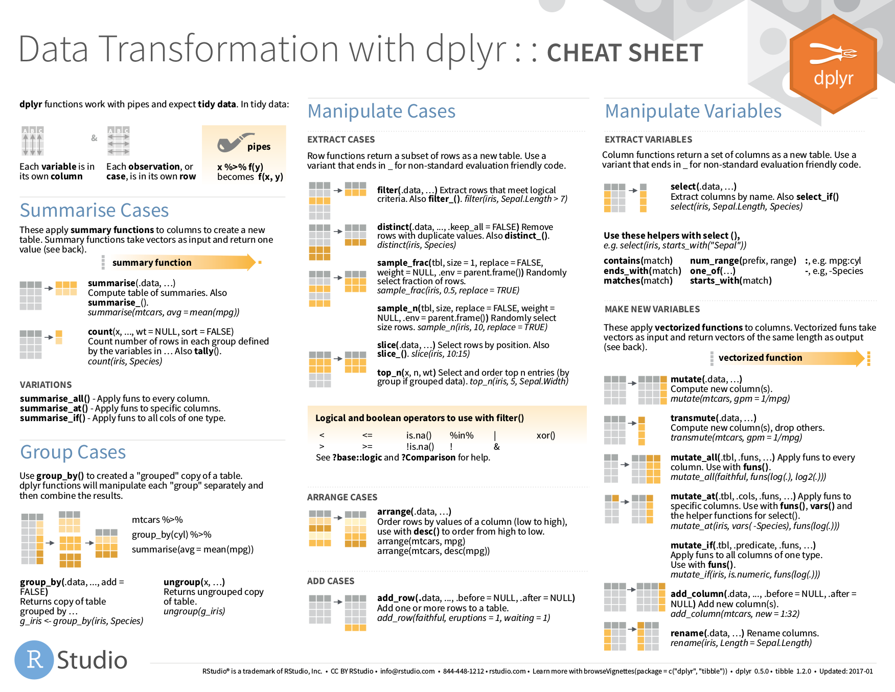
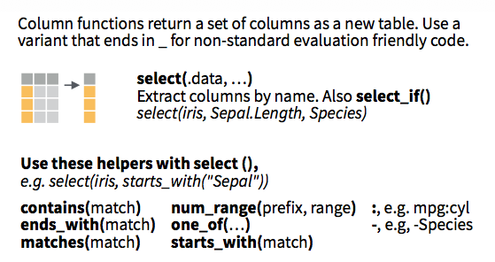
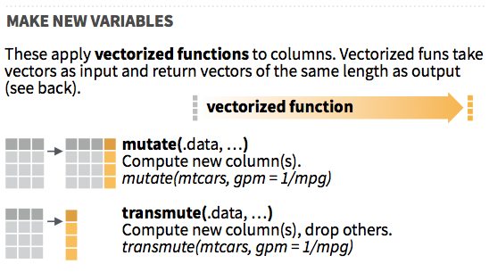
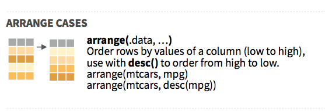
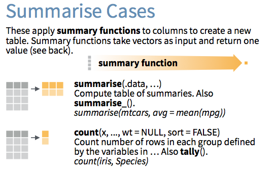
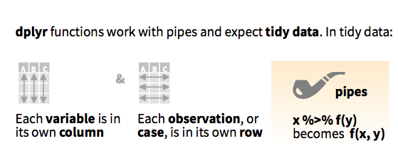

Databases in the tidyverse

ASA Webinar Ben Baumer & Nick Horton November 15, 2017 (https://github.com/beanumber/tidy-databases)
Ben Baumer and Nick Horton
ASA Webinar Ben Baumer & Nick Horton November 15, 2017 (https://github.com/beanumber/tidy-databases)
dplyrdplyr engine translates a data pipeline

dplyrdplyr highlightsThe Five Verbs
select()filter()mutate()arrange()summarize()Plus:
group_by()rename()inner_join(), left_join(), etc.do()tbl_df (more on that later)%>% (more on that later)

tbldata.framedata.frametidyverse works with tibblesselect(): take a subset of the columns
filter(): take a subset of the rows
mutate(): add or modify a column
arrange(): sort the rows
summarize(): collapse to a single row
group_by(): apply to groups

|) in UNIXmagrittr package

The expression
mydata %>%
verb(arguments)is the same as:
verb(mydata, arguments)In effect, function(x, args) = x %>% function(args).
Instead of having to read/write:
select(filter(mutate(data, args1), args2), args3)You can do:
data %>%
mutate(args1) %>%
filter(args2) %>%
select(args3)bop(scoop(hop(foo_foo, through = forest), up = field_mice), on = head)foo_foo %>%
hop(through = forest) %>%
scoop(up = field_mouse) %>%
bop(on = head)mtcars %>%
filter(am == 1) %>%
group_by(cyl) %>%
summarize(num_models = n(),
mean_mpg = mean(mpg)) %>%
arrange(desc(mean_mpg))## # A tibble: 3 x 3
## cyl num_models mean_mpg
## <dbl> <int> <dbl>
## 1 4 8 28.07500
## 2 6 3 20.56667
## 3 8 2 15.40000library(Lahman)
Batting %>%
group_by(playerID) %>%
summarize(span = paste(min(yearID), max(yearID), sep = "-"),
career_HR = sum(HR), career_SB = sum(SB)) %>%
filter(career_HR >= 300, career_SB >= 300) %>%
left_join(Master, by = "playerID") %>%
mutate(player_name = paste(nameLast, nameFirst, sep = ", ")) %>%
select(player_name, span, career_HR, career_SB) %>%
arrange(desc(career_HR))## # A tibble: 8 x 4
## player_name span career_HR career_SB
## <chr> <chr> <int> <int>
## 1 Bonds, Barry 1986-2007 762 514
## 2 Rodriguez, Alex 1994-2016 696 329
## 3 Mays, Willie 1951-1973 660 338
## 4 Dawson, Andre 1976-1996 438 314
## 5 Beltran, Carlos 1998-2016 421 312
## 6 Bonds, Bobby 1968-1981 332 461
## 7 Sanders, Reggie 1991-2007 305 304
## 8 Finley, Steve 1989-2007 304 320dbplyr
dplyr <-> SQLdplyr
table %>%
filter(field == "value") %>%
left_join(lkup,
by = c("lkup_id" = "id") %>%
group_by(year) %>%
summarize(N = sum(1)) %>%
filter(N > 100) %>%
arrange(desc(N)) %>%
head(10)MySQL
SELECT
year, sum(1) as N
FROM table t
LEFT JOIN lkup l
ON t.lkup_id = l.id
WHERE field = "value"
GROUP BY year
HAVING N > 100
ORDER BY N desc
LIMIT 0, 10;
dbplyr = dplyr + SQL connectiondplyr can access a SQL database directlytbl_df, you have a tbl_sqldplyr to SQL translation via show_query()db <- src_mysql(db = "imdb", host = "scidb.smith.edu",
user = "mth292", password = "RememberPi")
title <- tbl(db, "title")
title## # Source: table<title> [?? x 12]
## # Database: mysql 5.5.57-0ubuntu0.14.04.1 [mth292@scidb.smith.edu:/imdb]
## id title imdb_index
## <int> <chr> <chr>
## 1 78460 Adults Recat to the Simpsons (30th Anniversary) <NA>
## 2 70273 (2016-05-18) <NA>
## 3 60105 (2014-04-11) <NA>
## 4 32120 (2008-05-01) <NA>
## 5 97554 Schmölders Traum <NA>
## 6 57966 (#1.1) <NA>
## 7 76391 Anniversary <NA>
## 8 11952 Angus Black/Lester Barrie/DC Curry <NA>
## 9 1554 New Orleans <NA>
## 10 58442 Kiss Me Kate <NA>
## # ... with more rows, and 9 more variables: kind_id <int>,
## # production_year <int>, imdb_id <int>, phonetic_code <chr>,
## # episode_of_id <int>, season_nr <int>, episode_nr <int>,
## # series_years <chr>, md5sum <chr>title contains 4.6 million rows, but…print(object.size(title), units = "Kb")## 3.8 Kbtitle looks like a data.frame but…class(title)## [1] "tbl_dbi" "tbl_sql" "tbl_lazy" "tbl"data.frameshow_query()star_wars <- title %>%
filter(title == "Star Wars", kind_id == 1) %>%
select(production_year, title)
star_wars## # Source: lazy query [?? x 2]
## # Database: mysql 5.5.57-0ubuntu0.14.04.1 [mth292@scidb.smith.edu:/imdb]
## production_year title
## <int> <chr>
## 1 1977 Star Warsshow_query(star_wars)## <SQL>
## SELECT `production_year` AS `production_year`, `title` AS `title`
## FROM `title`
## WHERE ((`title` = 'Star Wars') AND (`kind_id` = 1.0))library(dbplyr)
translate_sql(ceiling(mpg))## <SQL> CEIL("mpg")translate_sql(mean(mpg))## <SQL> avg("mpg") OVER ()translate_sql(cyl == 4)## <SQL> "cyl" = 4.0translate_sql(cyl %in% c(4, 6, 8))## <SQL> "cyl" IN (4.0, 6.0, 8.0)# no PASTE() in SQL
translate_sql(paste("hp", "wt", "vs"))## <SQL> PASTE('hp', 'wt', 'vs')# works, but no CONCAT() in R
translate_sql(CONCAT("hp", "wt", "vs"))## <SQL> CONCAT('hp', 'wt', 'vs')# nonsense
translate_sql(CRAZY_FUNCTION(mpg))## <SQL> CRAZY_FUNCTION("mpg")title %>%
filter(title %like% '%Star Wars%',
kind_id == 1,
!is.na(production_year)) %>%
select(title, production_year) %>%
arrange(production_year)## # Source: lazy query [?? x 2]
## # Database: mysql 5.5.57-0ubuntu0.14.04.1 [mth292@scidb.smith.edu:/imdb]
## # Ordered by: production_year
## title production_year
## <chr> <int>
## 1 Star Wars 1977
## 2 Star Wars: Episode V - The Empire Strikes Back 1980
## 3 Star Wars Underoos 1980
## 4 Star Wars: Episode VI - Return of the Jedi 1983
## 5 Tezukuri no Star Wars 1990
## 6 Star Wars: Episode I - The Phantom Menace 1999
## 7 Star Wars Gangsta Rap 2000
## 8 Star Wars Returns 2001
## 9 Star Wars: Attack of the Clones - A Jigsaw Puzzle 2002
## 10 Star Wars Episode V 1/2: The Han Solo Affair 2002
## # ... with more rowstitle %>%
filter(title %like% '%Star Wars%',
kind_id == 1,
!is.na(production_year)) %>%
mutate(before_dash = SUBSTRING_INDEX(title, '-', 1)) %>%
select(before_dash, production_year) %>%
arrange(production_year)## # Source: lazy query [?? x 2]
## # Database: mysql 5.5.57-0ubuntu0.14.04.1 [mth292@scidb.smith.edu:/imdb]
## # Ordered by: production_year
## before_dash production_year
## <chr> <int>
## 1 Star Wars 1977
## 2 Star Wars: Episode V 1980
## 3 Star Wars Underoos 1980
## 4 Star Wars: Episode VI 1983
## 5 Tezukuri no Star Wars 1990
## 6 Star Wars: Episode I 1999
## 7 Star Wars Gangsta Rap 2000
## 8 Star Wars Returns 2001
## 9 Star Wars: Attack of the Clones 2002
## 10 Star Wars Episode V 1/2: The Han Solo Affair 2002
## # ... with more rowsdplyr vs. SQL?R + dplyr good at:
SQL good at:


| “Size” | size | hardware | software |
|---|---|---|---|
| small | < several GB | RAM | R |
| medium | several GB – a few TB | hard disk | SQL |
| big | many TB or more | cluster | Spark? |
DBIDBI


r-dbi:
RSQLite RMySQL odbc bigrquery RPostgres Others:
RPostgreSQL MonetDBLite DBI underneath dbplyrclass(db)## [1] "src_dbi" "src_sql" "src"str(db)## List of 2
## $ con :Formal class 'MySQLConnection' [package "RMySQL"] with 1 slot
## .. ..@ Id: int [1:2] 0 1
## $ disco:<environment: 0x8b954a0>
## - attr(*, "class")= chr [1:3] "src_dbi" "src_sql" "src"class(db$con)## [1] "MySQLConnection"
## attr(,"package")
## [1] "RMySQL"dbListTables(db$con)## [1] "aka_name" "aka_title" "cast_info"
## [4] "char_name" "comp_cast_type" "company_name"
## [7] "company_type" "complete_cast" "info_type"
## [10] "keyword" "kind_type" "link_type"
## [13] "movie_companies" "movie_info" "movie_info_idx"
## [16] "movie_keyword" "movie_link" "name"
## [19] "person_info" "role_type" "title"dbListFields(db$con, "title")## [1] "id" "title" "imdb_index"
## [4] "kind_id" "production_year" "imdb_id"
## [7] "phonetic_code" "episode_of_id" "season_nr"
## [10] "episode_nr" "series_years" "md5sum"dbplyr
tbl_sql (see previous examples)DBI
dbGetQuery()rmarkdown
dbGetQuery()query <- "SELECT production_year, title
FROM title
WHERE title = 'Star Wars' AND kind_id = 1;"
dbGetQuery(db$con, query)## production_year title
## 1 1977 Star Warsdplyr pipelinermarkdown# ```{sql, connection=db$con, output.var = "mydataframe"}
# SELECT production_year, title
# FROM title
# WHERE title = 'Star Wars' AND kind_id = 1;
# ```connection talks to databaseoutput.var stores the resulthead(mydataframe)## production_year title
## 1 1977 Star Warstbl_sql’s are tinytitle <- tbl(db, "title")
class(title)## [1] "tbl_dbi" "tbl_sql" "tbl_lazy" "tbl"print(object.size(title), units = "Kb")## 3.8 Kbold_movies <- title %>%
filter(production_year < 1950,
kind_id == 1)
class(old_movies)## [1] "tbl_dbi" "tbl_sql" "tbl_lazy" "tbl"dim(old_movies)## [1] NA 12print(object.size(old_movies), units = "Kb")## 6.8 Kbcollect() to bring into Rold_movies_local <- old_movies %>%
collect()
class(old_movies_local)## [1] "tbl_df" "tbl" "data.frame"dim(old_movies_local)## [1] 184837 12print(object.size(old_movies_local), units = "Mb")## 39.2 Mbprint(), head(), glimpse(), etc.collect()
bookdown
dplyr